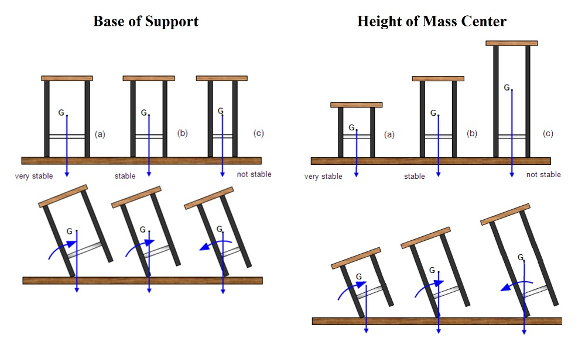

Qualitative Analysis of Human Movement
There are three approaches to the analysis of human movement. These have been termed "subjective", "objective", and "predictive". The predictive approach asks the question: "What if ..." and involves computer simulations and forward dynamics that are covered in advanced topics. The objective approach involves measurement of kinematics and the calculation of forces and moments that cause movement like we did in the static equilibrium lecture and we will continue in dynamic equilibrium later. This lecture is concerned with the subjective analysis of human movement in which subjective estimates are made and biomechanical principles are applied without exact measurements and sophisticated equipment.
Biomechanics Principles:
1) Summation of Joint Torques:
When we wish to move an object, we must apply a force to it. We know that our muscles generate moments of force or torques about joint centers to achieve this. For any given task, we can ask the question "Am I using all of the available muscle groups to maximize the summation of joint torques?".
2) Continuity of Joint Torques:
The answer to the above question might be "yes" but the timing of those applied joint torques may not be optimal for the desired performance. Therefore, we need to ask the question "Do the joint torques have the proper timing or sequence?". Throwing a ball has proximal-to-distal sequence of shoulder, then elbow, then wrist while the vertical jump requires a near simultaneous timing of hip knee and ankle extension.
3) Impulse - Momentum:
Momentum is equal to mass times velocity and impulse is equal to a change in momentum. In many activities the object is to generate the greatest impulse in order to maximize a change in momentum (i.e. throwing a ball as hard or as far as you can). Impulse is also equal to force times time so you ask the question: Are the forces being applied for as long as possible?". One way to apply forces for a longer period of time is to maximize the range of motion.
4) Action - Reaction:
Newton's third law states that for each action there is an equal but opposite reaction. In order to jump as high as possible, we push downward against the ground and it is the ground's reaction on us the causes us to accelerate upward. A baseball pitcher pushes off the ground in order to throw a ball forcefully. If the pitcher were to jump in the air and then try to throw the ball, the force on the ball would not be so large. The arm forces could be the same but the contribution from the legs would be gone because contact with the ground was lost. We should also think of friction when using this principle.

5) Equilibrium, Balance and Stability:
We have already looked at static equilibrium in this course in which all of the forces and moments balanced to zero. In a dynamic situation, the forces and moments often do not balance to zero and this can cause objects to fall or move in an undesirable fashion. The stability of an object is often simplistically looked at by the "righting moment". That is to say the moment of force required to maintain an upright position. If we look at the diagram of bar stools to the right, we can see that the larger the base of support and/or the lower the center of mass, the more stable the object is. When the stools are tilted the same amount, the stool with smallest base of support and the stool with the highest CofG both would require an additional moment to keep from falling while gravity provides an adequate righting moment for the other stools.
This definition of stability is not sufficient for human stability or any system with dynamic control. If you are walking along a very narrow path such as tightrope or railway track, it easier for you to keep your balance by raising your arms out to the side. The base of support has not been changed and you have actually raised your CofG and yet you are more stable not less. The reason for this is that you have increased your moment of inertia which decreases your tenancy to rotate and gives you more time to make corrections (righting moments) before losing your balance. Similarly, a spinning top is more stable then a stationary top and it is much easier to keep a bicycle balanced while it is moving than when it stops.
6) Summation of Body segment Velocities:
Similar to the summation of joint torques, velocity vectors add and if the desired movement is not achieved, we can look to see which body segment did not have the expected magnitude and direction of velocity.

7) Production of Rotational Momentum:
In order to produce rotational momentum, we must generate angular impulse which is applying a large moment of force over a long period of time. The springboard diver shown to the right uses the flex in the board to store energy and then exert a large reaction force on the diver over a longer period of time. As mentioned earlier, force over longer periods of time increase impulse and a change in momentum. If that reaction force was directed through the center of mass of the diver, it would not produce any rotation. In this case, the diver is attempting a front 2.5 somersault in the pike position and must generate a large angular or rotational momentum. To achieve this, the reaction force from the board must the directed posterior to the center of mass thereby generating a large moment of force over a long period of time.
8) Conservation of Momentum and Energy Transfer:
Momentum is conserved in collisions or impacts. When two objects collide there is often a transfer of energy from one object to the other as one object loses momentum and the other object increases momentum by the same amount. A smaller player could have the same momentum as a larger player if the smaller player has a higher velocity. If the two players have the same momentum in opposite directions, the total momentum is zero. If these two players collide, the momentum remains zero, both players stop, and the smaller player has managed to stop the larger player by virtue of having a higher velocity.
Energy can be transferred between limb segments. When you walk and swing your leg forward, it reaches full knee extension and as your leg slows down, it pulls the thigh forward. There has been a transfer of energy from the leg to the thigh causing a hip flexion without requiring work to be performed by the hip flexor muscles.
Momentum is also conserved in the airborne phase of the running long jump. From projectile motion, we know that horizontal velocity is constant (neglecting air resistance) but if the jumper could lose mass, the velocity would be increased. This can be demonstrated by performing the long jump while carrying weights in your hands. You can add about 10% of your body weight and run at almost 100% of your speed without the weights. This will result in a greater momentum at takeoff and if you throw the weights backward while you are in the air, your velocity will increase because the momentum must remain the same. This will result in a further jump.
9) Manipulation of Rotational Inertia:
The previous example of the long jumper throwing weights backward may seem a bit ridiculous but this effect is used often in the rotational world. In the linear world, increasing and decreasing mass is quite difficult but in the rotational world, increasing and decreasing rotational inertia (moment of inertia) is very easy. Rotational inertia is dependent on the amount of mass and how that mass is distributed about the axis of rotation.
The video clip uses a frictionless rotating platform to demonstrate this effect. The axis of rotation is a vertical axis and if a person stands on the platform, their rotational momentum is zero. They can swing their arms in one direction but the rest of their body rotates in the opposite direction such that any positive momentum is canceled by an equal negative momentum. The only way to generate rotational momentum is to exert a force away from the axis and the person does this by pushing off the desk. Once the hand is no longer in contact with the desk the rotational momentum remains constant. However, the person can increase or decrease the rotational velocity by increasing and decreasing the rotational momentum by redistributing the mass toward or away from the axis of rotation. This redistribution of mass only requires the ability to move the arms closer to the axis or further away from the axis.
The springboard diver mentioned above uses the reaction force from the board to generate rotational momentum, Once in the air, contact with the board is lost and no further rotational momentum can be generated and the rotational momentum is conserved (constant). By assuming a pike position, the speed of rotation increases because the mass has been redistributed closer to the transverse axis about which the diver is rotating. A tuck position brings the mass even closer to the axis and rotation speed is even faster.
10) Manipulation of Segmental Rotational Momentum:
The video for the previous principle showed a person on a frictionless platform with no angular momentum and the only way they could generate angular momentum was to push off the desk. Watch the clip below to see a person complete a full revolution without pushing off the desk. How is this possible?
Air resistance is not the answer - this move can be performed in a vacuum. At no point was rotational momentum generated
Qualitative Movement Analysis Flow Chart
The flow chart to the left is a handy guide to help improvement of human movement. It shows the four stages that a movement practitioner should follow. The practitioner could be a coach helping an athlete, a therapist helping a patient or an ergonomist helping with workplace tasks.
The first stage is the pre-observation stage and requires the identification of the mechanical variables involved in a movement using the principles that we introduced above. Once the practitioner has decided what to look for, the observation plan can be decided such as the point of view or to use video recording, etc.
The second stage is to make the observation and compare the desired movement to the observed movement.
The Analysis phase involves identifying and ranking the errors and then using the principles above to speculate on the causes of those errors. It is important to rank those errors and choose which one to work on first.
Finally, the Remediation phase is the communication of the error and the suggested strategy that may lead to an improvement in the performance. Following the intervention, the movement is observed again in a continuous process that will hopefully cycle toward a consistently better performance.